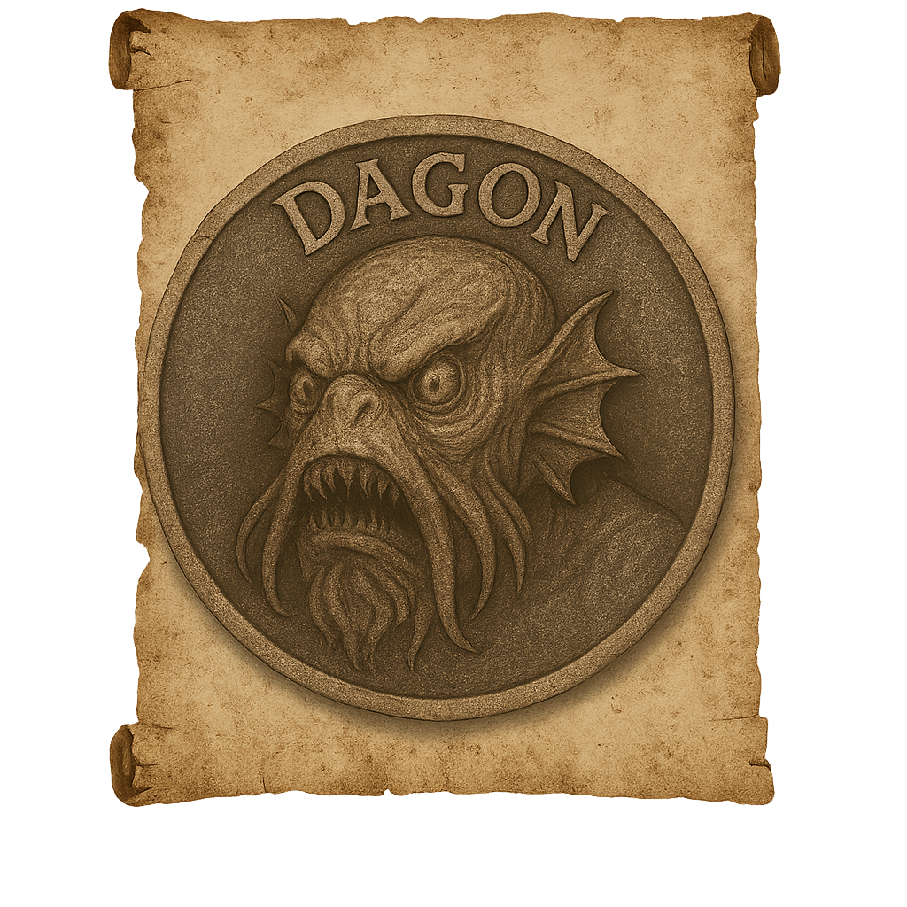

Insignia 01
Find more information about your Insignia, on your Insignias
PAGE 01 / 11 / 1919
Description
Dagon is a monstrous sea deity from H.P. Lovecraft’s Cthulhu Mythos, often depicted as an immense, amphibious, humanoid creature. Towering and grotesque, Dagon combines features of deep-sea fish and a bloated, decaying humanoid form. Its slimy, scaled body is covered in barnacles and seaweed, with massive claws, bulging eyes, and gill slits flanking its neck. Worshipped by the Deep Ones—an ancient, ocean-dwelling race—Dagon is associated with the abyssal depths and the eldritch terror of the sea. It is a symbol of ancient, unknowable power lurking beneath the waves, evoking dread and awe in those who encounter it or its cults.
"I think I went mad then. Of my frantic ascent of the slope and cliff, and of the delirium that haunted me afterward, I remember little. I believe I sang a great deal, and laughed oddly when I was unable to sing." — H.P. Lovecraft, “Dagon”
Clasification
- Class: Lesser Realities
- Threat Level: Metaphysical Contagion
- Contact Risk: Dissolution of Self / Subsumed into the Tides
- Presence Detected: Submerged ruins off the Cyclopean Coast, in lucid dream clusters among Deep Communion initiates.
Scholar’s Record – Scribe Voen-Khoth
_“On the 14th of the Fifth Cycle, I dreamt of a sunken temple whose bells still toll beneath the abyss. Dagon rose from the rift—not as a god, but as an answer. His flesh was ocean. His breath was older than rot. He did not speak. He filled me. Since then, my lungs beg for saltwater.”_
Investigator Advisory
- Never travel alone in coastal areas after dusk.
- If you hear chanting with no source, cover your ears and retreat.
- In case of involuntary submersion: do not respond if your name is heard underwater.
- First sign of contact: scales appearing in your dreams.
- Second sign: dreaming in languages you’ve never learned.
Supplemental Notes
Scholars of the Abyssal Choir claim Dagon is not a singular deity, but a choral mental frequency born from countless drowned minds. His manifestations are linked to impossible tides and waters where the salt content exceeds oceanic norms. It is theorized his true body exists under a pressure matter cannot endure, and that he only surfaces where human identity begins to erode.
Warning: This file has been reconstructed from waterlogged tablets, echoes of amphibious prayers, and fragments of memories retrieved from fog-wrapped shores. Its truth cannot be confirmed—only feared.